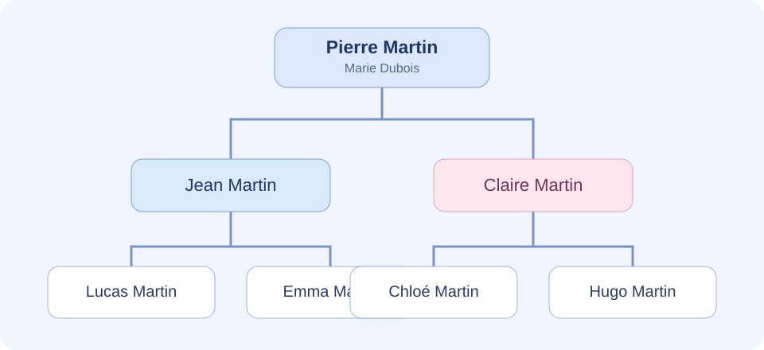

Installation Windows
Application à installer sur un ordinateur compatible Windows.
Une application Windows indépendante, créée par son auteur et proposée sous licence d'utilisation avec abonnement annuel.
Souscriptions en ligne non encore ouvertesMNG e-Familia est un logiciel de bureau à installer sur Windows. Sa commercialisation internationale est prévue sous forme de téléchargement et de clé d'activation.
Application à installer sur un ordinateur compatible Windows.
Le logiciel dispose de cinq langues d'utilisation.
Une clé d'activation par abonnement, pour un seul ordinateur.
Organisez votre histoire familiale.
Informations, photos et liens familiaux.
Ascendants, descendants et relations familiales.
Événements familiaux et indicateurs.

Illustration de démonstration — données entièrement fictives.
49 USD par an pour un ordinateur. Renouvellement automatique chaque année, sauf annulation demandée par le client avant la prochaine échéance.
Le code d’activation est généré à partir du code propre à l’ordinateur communiqué par l’utilisateur. Il ne fonctionne pas sur un autre poste.
Aucun paiement n'est collecté sur ce site actuellement. Les achats seront proposés après validation de la boutique et publication des conditions commerciales.
Le téléchargement commercial sera proposé après l’ouverture officielle des ventes.
Choisissez un abonnement annuel pour un seul ordinateur lorsque les ventes seront ouvertes.
Téléchargez et installez le logiciel Windows depuis le lien officiel qui sera publié ici.
Communiquez le code d’identification de votre ordinateur afin de recevoir son code d’activation spécifique.
Téléchargement et paiement indisponibles pour le moment. Aucun bouton de paiement n’est actif.
Documents préparatoires. Les téléchargements commerciaux restent indisponibles.
Pour toute question sur le logiciel, sa disponibilité ou les licences, contactez-nous par courrier électronique.
MNG e-Familia est développé indépendamment par son auteur, qui conserve les droits sur le logiciel. Les conditions de licence, de confidentialité et de vente seront accessibles avant toute souscription payante.